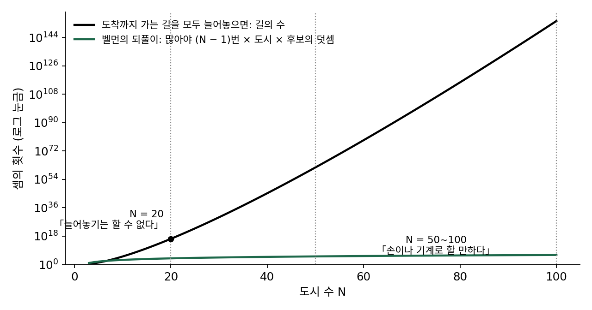
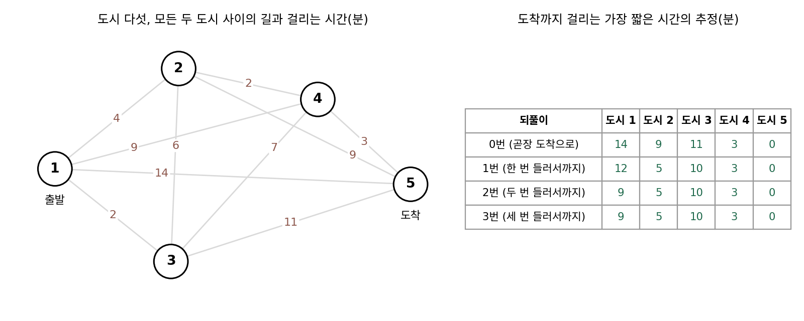
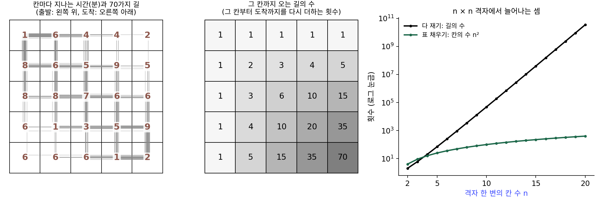
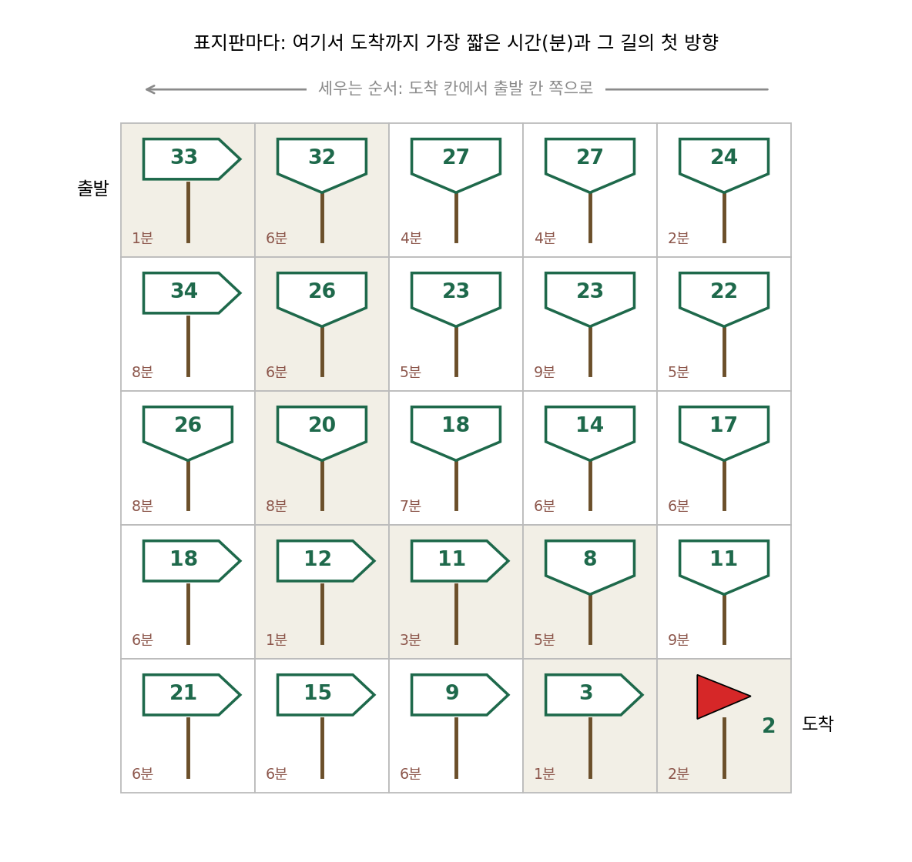
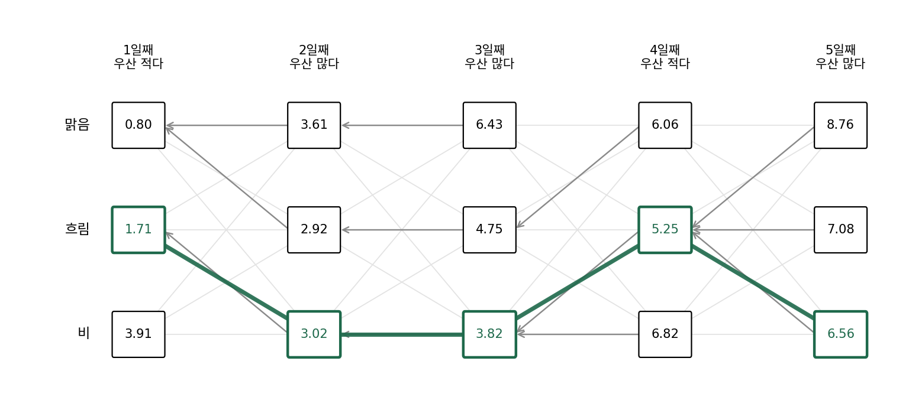
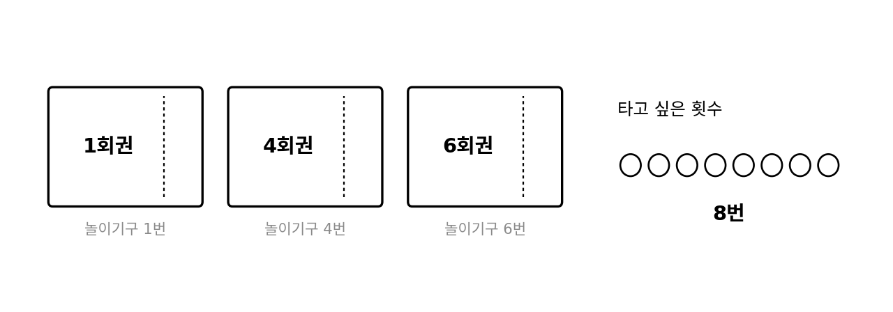
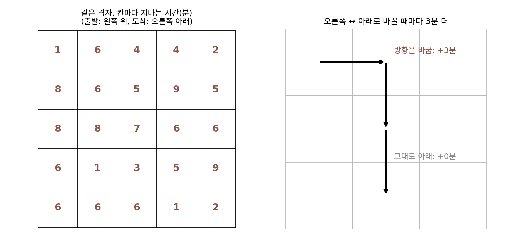
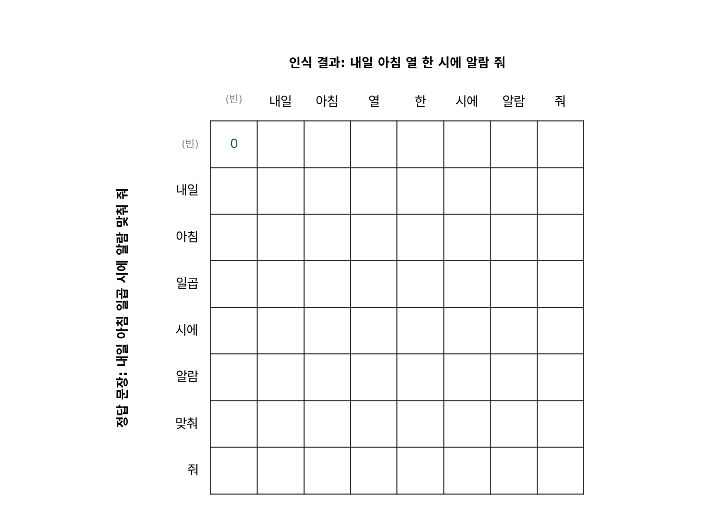

구조를 쓰는 탐색: 값만 잴 때 무엇을 더 알면 덜 재나
동적 계획법: 쪼개서 다시 쓰기
밸런스 패치의 운영사가 손에 쥔 것은 판을 돌려 읽은 승률뿐이었고, 승률이 수치에서 어떻게 만들어지는지는 쓸 수 없었다. 문제의 생김새를 조금 더 아는 경우는 어떨까? 지도 앱에 출발지와 도착지를 넣으면 가장 빠른 길이 1초도 안 되어 나온다. 교차로마다 갈 수 있는 방향이 둘셋이라 도시를 가로지르는 길의 수는 교차로를 하나 지날 때마다 몇 배씩 불어나는데도 그렇다. 무작위 탐색이나 진화 전략처럼 값만 재는 방법으로 이 일을 하면, 후보 하나는 출발부터 도착까지 이어진 길 하나이고 돌아오는 값은 그 길에 걸리는 시간 하나다. 그런데 길찾기에는 값 말고도 아는 것이 있다. 한 길에 걸리는 시간은 그 길이 지나는 구간마다 걸리는 시간의 합이고, 서로 다른 길도 뒷부분은 같은 구간을 지나는 일이 많다. 이 사실을 쓰면 길을 하나하나 재지 않고도 가장 빠른 길을 고를 수 있을까, 그리고 그렇게 하면 셈은 얼마나 줄어들까?
역사: 벨먼이 도시 스무 개 앞에서 늘어놓기를 그만두다
미국의 수학자 리처드 벨먼(Richard Bellman)은 공군의 연구를 맡던 랜드 연구소(RAND)에서 여러 단계에 걸쳐 결정을 내리는 문제를 다루며, 그 방법을 「동적 계획법(dynamic programming)」이라 불렀다. 이 이름을 붙인 사연은 그의 자서전에 회고로 남아 있지만, 회고에 나오는 연도가 실제와 맞지 않는다는 지적도 있다.
이 절의 물음에 바로 닿는 것은 그가 같은 방법을 길찾기에 쓴 짧은 글이다. 벨먼은 1956년 12월 랜드 보고서로, 1958년에는 『Quarterly of Applied Mathematics』에 「길찾기 문제에 관하여(On a Routing Problem)」를 실었다. 도시 N 개가 모두 서로 길로 이어져 있고, 길마다 걸리는 시간은 거리에 비례하지 않는다. 길의 상태와 오가는 차량이 다르기 때문이다. 출발 도시에서 도착 도시까지 가장 빨리 가는 길을 찾는 이 문제에서 길의 수는 유한하므로, 원리로는 유한한 수 가운데 가장 작은 것을 고르면 끝난다. 벨먼은 바로 다음 문장에서 그렇게 늘어놓아 고르는 방법은 도시가 스무 개쯤만 되어도 실행할 수 없다고 적었다.

그 대신 벨먼은 도시마다 「여기서 도착까지 가장 빨리 가는 데 걸리는 시간」을 하나씩 두었다. 도시 i 의 그 시간은, 다음에 들를 도시 j 를 하나 골라 i 에서 j 까지 걸리는 시간과 j 에서 도착까지 가장 빨리 가는 시간을 더한 값 가운데 가장 작은 것이어야 한다. 남은 길을 끝까지 늘어놓지 않고 바로 다음 도시의 값만 보면 된다. 그런데 벨먼 자신도 적었듯이 이 연립식은 동적 계획법에서 흔히 만나는 것과 달리 바로 계산할 차례가 없었다. 도시에는 단계의 순서가 없어서 어느 도시의 값부터 정해야 할지 알 수 없었기 때문이다. 벨먼은 「모든 도시에서 곧장 도착 도시로 간다」는 가장 단순한 처음 값에서 시작해, 도시마다 위의 고르기를 한 번씩 다시 하는 되풀이를 썼다. 한 번 되풀이한 값은 한 번 들러서 가는 길까지 견준 시간이고, 두 번 되풀이하면 두 번 들러서까지 견준 시간이 된다. 그러니 많아야 N − 1 번이면 값이 더는 바뀌지 않는다. 그는 이 방법이 도시 50~100 개쯤이면 손으로도 기계로도 할 만하고, 도시마다 그 도시에서 나가는 시간 한 줄만 들고 있으면 되어 컴퓨터 기억 장치도 적게 든다고 적었다.


도시 스무 개면 지금 컴퓨터로는 그냥 다 세도 되지 않아요? 스무 개가 그렇게 많은 것 같지는 않은데요.

같은 도시를 두 번 지나지 않는 길만 세도 약 1.74 × 10¹⁶ 가지예요. 1초에 10억 개씩 잰다면 얼마나 걸릴까요?

10¹⁶ 을 10⁹ 로 나누면 1.74 × 10⁷ 초니까… 200일이 넘네요. 지금 컴퓨터로도 지도 앱에 한 번 묻고 반년 넘게 기다려야 해요.

1956년이면 컴퓨터가 지금보다 훨씬 느렸을 텐데, 벨먼이 손으로도 된다고 쓴 건 도시가 늘어도 셈이 별로 안 늘어서겠네요.

도시가 스물에서 스물하나로 늘면 길의 수는 19배가 돼요. 기계가 열 배 빨라져도 도시 하나만 더하면 도로 제자리예요. 그래서 벨먼은 셈을 빨리 하는 쪽 대신 셈의 양을 줄이는 쪽을 골랐어요. 도시마다 숫자 하나만 들고 있으면 되니, 그때의 작은 기억 장치로도, 종이와 연필로도 할 수 있었던 거죠.

도시 1 에서 도착까지의 값을 구할 때 도시 4 에서 도착까지의 값을 그대로 가져다 쓰는 거니까, 도시 4 뒤의 길은 한 번만 계산하는 거네요. 그런데 길에 순서가 있으면 되풀이 없이 한 번에 끝낼 수도 있지 않을까요?
5 × 5 격자에서 다 재기와 표 채우기
길에 순서가 있는 가장 작은 예로 바둑판 모양 동네를 고른다. 칸이 가로세로 다섯 개씩이고, 칸마다 지나는 데 걸리는 시간(분)이 다르다(숫자는 이 책이 정한 값). 왼쪽 위 칸에서 출발해 오른쪽 아래 칸에 닿아야 하고, 도착에서 멀어지는 쪽으로는 가지 않기로 해서 한 번에 오른쪽이나 아래로 한 칸씩만 옮긴다. 그러면 어느 길이든 오른쪽 넷, 아래 넷의 여덟 번을 옮기고 칸 아홉 개를 지난다. 여덟 번 가운데 아래로 가는 네 번을 고르는 방법은 C(8, 4) = 70 가지이므로 길은 70 가지이고, 손으로도 다 확인할 수 있을 만큼 작다.
다 재기부터 해 보자. 길마다 칸 아홉 개의 시간을 더하면 덧셈이 8번이니 70 가지 길이면 560번이고, 나온 70 개의 시간을 비교하는 데 69번이 더 들어 모두 629번이다. 가장 빠른 길은 33분 하나뿐이고(오른쪽 → 아래 → 아래 → 아래 → 오른쪽 → 오른쪽 → 아래 → 오른쪽), 가장 느린 길은 55분이다.

가운데 그림이 다 재기의 낭비를 보여 준다. 한가운데 칸(위에서 셋째 줄, 왼쪽에서 셋째 칸)까지 오는 길은 6 가지이고, 거기서 도착까지 가는 길도 6 가지다. 다 재기는 한가운데 칸에서 도착까지 가는 6 가지 뒷부분의 시간을, 한가운데 칸까지 오는 앞부분 6 가지마다 처음부터 다시 더한다. 뒷부분에서 가장 빠른 것은 앞부분이 어디서 왔든 같은데도 그렇다.
그러면 순서를 거꾸로 해서 도착 칸부터 「여기서 도착까지 가장 짧은 시간」 V 를 칸마다 적어 나가면 된다. 도착 칸에는 그 칸의 시간 2분을 적는다. 맨 아랫줄과 맨 오른쪽 줄의 칸은 갈 수 있는 이웃이 하나뿐이라 그 칸의 시간 c 에 이웃의 V 를 더하기만 한다. 나머지 열여섯 칸은 오른쪽 이웃과 아래 이웃의 V 가운데 작은 것을 골라 더한다. 출발 칸에 닿으면 그 칸의 값이 33분이고, 칸마다 적어 둔 「작은 쪽」을 따라가면 다 재기로 찾은 바로 그 33분 길이 나온다. 이 표를 채우는 데는 덧셈 24번과 견주기 16번, 모두 40번이 들었다.
이렇게 큰 문제의 답을 같은 꼴의 작은 문제의 답으로 적고, 작은 문제부터 한 번씩만 풀어 표에 적어 두었다가 큰 문제에서 다시 쓰는 방법을 동적 계획법 (작은 문제의 답을 표에 적어 다시 쓰기 / dynamic programming)이라 한다. 벨먼의 도시와 이 격자는 같은 식을 쓰고, 격자에는 「오른쪽 아래가 늘 나중」이라는 순서가 있어 도착 칸부터 한 번 훑으면 끝난다는 점만 다르다. 그 순서가 없던 도시 문제는 되풀이로 값이 굳기를 기다려야 했다. 이 표가 맞으려면 칸 (i, j) 에서 도착까지의 가장 빠른 길이 그 칸에 어떻게 왔는지와 상관없어야 하는데, 벨먼은 「앞으로의 가장 좋은 선택은 지금 처지에만 달려 있다」는 이 성질을 최적성의 원리(principle of optimality)라고 불렀다.
격자가 커지면 두 방법의 셈 차이가 빠르게 벌어진다. 한 변이 n 칸이면 길은 C(2n − 2, n − 1) 가지, 표의 칸은 n² 개다. n = 10 이면 길이 48,620 가지인데 칸은 100 개이고, n = 20 이면 길이 약 353억 가지인데 칸은 400 개다.
등산로 갈림길마다 「정상까지 1.2 km」 같은 표지판이 서 있으면, 갈림길에 선 사람은 지도를 펼치지 않고 표지판만 보고 걷는다. 표 V 는 그런 표지판을 도착 칸에서부터 거꾸로 세워 나간 것이다. 표지판 하나를 세울 때는 바로 다음 칸 둘의 표지판만 읽으면 되고, 그 뒤의 길은 이미 다음 칸 표지판의 숫자에 다 들어 있다.

ML에서: 비터비 디코딩, 편집 거리, 그리고 가치 반복
앤드루 비터비(Andrew Viterbi)는 1967년 노이즈가 섞인 통신 선로로 보낸 부호(합성곱 부호)를 푸는 방법을 냈는데, 그 방법이 동적 계획법이다. 보낸 쪽의 숨은 상태가 시각마다 몇 가지 가운데 하나로 바뀌어 가고 받는 쪽에는 그 상태에 따라 확률로 나온 신호만 보일 때(이런 모델을 은닉 마르코프 모델이라 한다), 가장 그럴듯한 숨은 상태의 줄을 찾는 일을 격자의 길찾기로 바꾼다. 가로는 시각, 세로는 숨은 상태이고, 칸에 적는 값은 「여기까지 오는 가장 그럴듯한 줄」의 −log 확률이다. 날씨 셋(맑음·흐림·비)이 닷새 이어지는 장난감에서 역 앞에서 우산을 든 사람이 적었는지 많았는지만 보고 날씨를 맞힌다면(확률은 이 책이 정한 값), 날씨의 줄은 3⁵ = 243 가지이지만 표의 칸은 15 개이고 칸마다 앞 시각의 세 칸 가운데 하나를 고르기만 한다. 비터비 알고리즘은 CDMA·GSM 휴대전화의 부호 풀기에 널리 쓰였고, 은닉 마르코프 모델로 소리에서 글자를 찾는 음성 인식에도 쓰였다.

두 글자열이 얼마나 다른지를 「바꾸기·빼기·넣기를 가장 적게 몇 번 하면 같아지나」로 재는 편집 거리(블라디미르 레벤시테인(Vladimir Levenshtein), 1965)도 같은 표로 구한다. 편집 거리의 표를 채우는 방법은 서로 다른 분야에서 여러 번 따로 나왔다. 음성 인식의 빈추크(Taras Vintsyuk, 1968), 단백질 서열을 비교한 니들먼(Saul Needleman)과 운슈(Christian Wunsch, 1970), 글자열 고치기를 다룬 와그너(Robert Wagner)와 피셔(Michael Fischer, 1974)가 그 예다. 역전파도 같은 생각을 쓴다. 손실 칸에서 거슬러 오며 「그 칸에서 손실까지의 그래디언트」를 한 번만 계산해 두고, 그 칸으로 들어오는 앞쪽 입력들이 모두 그 그래디언트를 나눠 쓴다.
강화학습의 가치 반복은 역사에서 본 벨먼의 되풀이를 보상과 확률이 있는 문제로 옮긴 것이다. 상태마다 「여기서 앞으로 받을 가장 큰 보상의 합」을 하나씩 두고, 다음 상태의 값만 보고 고쳐 쓰기를 값이 굳을 때까지 되풀이한다.
문제 5. 놀이공원 이용권으로 여덟 번
놀이공원에서 1회권, 4회권, 6회권 세 가지 이용권을 판다(값은 생각하지 않는다). 놀이기구를 꼭 8번 타려고 할 때, (가) 큰 이용권부터 살 수 있는 만큼 사면 몇 장을 사는가? (나) 「m 번 타는 데 드는 가장 적은 장 수」를 m = 0 부터 8 까지 표로 채워 가장 적은 장 수를 구하라. (다) 표의 m = 8 칸은 표의 어느 칸들을 보고 채웠는가?


큰 것부터 사면 되죠. 6회권 한 장 사면 2번 남고, 4회권은 안 되니까 1회권 두 장. 세 장이요.
4회권 두 장이면요?

아, 4 + 4 = 8 이니까 두 장이네요. 큰 걸 먼저 집었더니 남은 2번이 1회권으로밖에 안 채워져서 오히려 늘었어요.
표로 해 볼게. 0번은 0장이고, m 번은 마지막에 산 이용권이 1회권이든 4회권이든 6회권이든 그 앞의 m − 1, m − 4, m − 6 번 칸에 한 장을 더한 거니까 셋 가운데 작은 걸 고르면 돼. 0 부터 8 까지 0, 1, 2, 3, 1, 2, 1, 2, 2. 8번 칸은 7번 칸(2장), 4번 칸(1장), 2번 칸(2장)을 보고 4번 칸에 한 장을 더해서 2장이야.
큰 이용권부터 사는 방법은 그 세 칸 가운데 어느 칸만 본 걸까요?

6회권을 먼저 집었으니 2번 칸만 봤어요. 표는 세 칸을 다 보고 고르고요. 바둑판 동네 표에서 오른쪽 이웃과 아래 이웃 가운데 작은 값을 고르던 것과 같은 꼴이에요. 이웃이 둘에서 셋이 된 것뿐이고요.
문제 6. 방향을 바꿀 때마다 3분
칸마다 지나는 시간이 아래 왼쪽 그림과 같은 5 × 5 격자에서 왼쪽 위 칸을 출발해 오른쪽 아래 칸까지 오른쪽이나 아래로만 간다. 이번에는 오른쪽으로 가다 아래로, 또는 아래로 가다 오른쪽으로 방향을 바꿀 때마다 3분이 더 든다. (가) 칸마다 값 하나(그 칸에서 도착까지 가장 짧은 시간)와 그 길의 첫 방향을 도착 칸부터 거꾸로 적되, 이웃 칸에 적힌 첫 방향이 그 이웃으로 들어가는 방향과 다르면 3분을 더해 견준다. 출발 칸에는 몇 분이 적히는가? (나) 70 가지 길을 다 재면 가장 짧은 길은 몇 분인가? (다) 두 답이 다르다면 표를 어떻게 고쳐야 하는가?

(가)부터 할게요. 도착 칸에서 거꾸로, 칸마다 오른쪽 이웃과 아래 이웃을 보는데 이웃 칸에 적힌 첫 방향이 내가 들어가는 방향과 다르면 3분을 얹어서 견줘요. 출발 칸까지 채우니까 43분이 나와요. 회전까지 넣어서 견줬으니 43분이 가장 짧은 시간이겠죠.
70 가지를 다 돌려 봤는데 41분이 나와. 오른쪽 둘, 아래 넷, 오른쪽 둘로 가고 방향을 두 번만 바꾸는 길이야.

2분 차이가 어디서 생기지? 식은 문제에 적힌 대로 세웠는데.
41분 길이 지나는 첫 줄 둘째 칸(6분)에는 (가)의 표에 뭐라고 적혀 있어요?
39분, 첫 방향은 아래요. 거기서 아래로 내려가 바로 밑의 6분짜리 칸(그 칸의 값 33분)을 지나는 길이에요.
출발 칸에서 그 칸으로는 오른쪽으로 들어왔죠. 그 사람이 적힌 방향대로 아래로 꺾으면요?
3분이 붙어서 42분이요. 그런데 꺾지 않고 오른쪽으로 계속 가면… 40분이에요.
그럼 거기 적힌 39분은 오른쪽으로 들어온 사람한테는 쓸모가 없네?

응. 그 칸에는 39분짜리 하나만 남기고 40분짜리 방향은 버렸는데, 오른쪽으로 들어온 사람한테는 버린 방향이 더 나았어. 그 칸에서 남은 가장 짧은 시간이 들어온 방향에 따라 달라지니까, 들어온 방향과 상관없다고 본 것부터 틀렸네.
지하철 환승역이랑 같네. 같은 역에 서 있어도 2호선을 타고 왔으면 2호선으로 그대로 가는 게 빠르고, 갈아타려면 환승 시간이 붙으니까 남은 시간이 타고 온 노선에 따라 다르잖아.
그러면 (다)는 칸마다 값을 둘 적으면 되겠어요. 「오른쪽으로 들어왔을 때」와 「아래로 들어왔을 때」. 칸이 25 개니까 값은 50 개이고, 출발 칸에서 41분이 나와요. 표지판을 칸마다 들어온 방향별로 두 개씩 세우는 거네요.

표에 적는 처지에는 남은 길을 고르는 데 필요한 것이 다 들어 있어야 해요. 칸 위치만으로 모자라면 들어온 방향까지 처지에 넣어 표를 늘리면 되고, 그래도 50 칸이에요. 격자가 20 × 20 이면 길은 약 353억 가지인데 값은 800 개면 돼요.
문제 7. 음성 인식의 단어 오류율
음성 인식 모델은 흔히 단어 오류율(WER, word error rate)로 잰다. 정답 문장을 인식 결과로 바꾸는 데 드는 단어 바꾸기·빼기·넣기의 가장 적은 횟수를 정답 문장의 단어 수로 나눈 값이다. 정답이 「내일 아침 일곱 시에 알람 맞춰 줘」(7단어), 인식 결과가 「내일 아침 열 한 시에 알람 줘」(7단어)일 때 (가) 두 문장을 맞대는 방법은 모두 몇 가지인가? 맞대기는 앞에서부터 「두 문장의 단어 하나씩 짝짓기」「정답 쪽 단어 하나 빼기」「인식 쪽 단어 하나 넣기」를 늘어놓은 것이다. (나) 표를 채워 단어 오류율을 구하라. (다) 단어 오류율이 100% 를 넘을 수 있는가?

일단 맞대는 방법부터 세 볼게요. 짝짓기는 두 문장에서 한 단어씩 쓰고, 빼기는 정답 쪽만, 넣기는 인식 쪽만 한 단어 쓰니까… 이거 표에서 대각선, 아래, 오른쪽으로 한 칸씩 가는 거네요.
그러면 맞대는 방법의 수는 어떤 길의 수와 같아요?

표의 왼쪽 위 칸에서 오른쪽 아래 칸까지 오른쪽·아래·대각선으로 한 칸씩 가는 길의 수요. 바둑판 동네 격자에 대각선만 더한 거예요. 코드로 세 보니 48,639 가지예요.
표 칸은 8 × 8 = 64 개야. 칸마다 위 칸 + 1(빼기), 왼쪽 칸 + 1(넣기), 왼쪽 위 칸 + (두 단어가 같으면 0, 다르면 1) 가운데 가장 작은 걸 적으면 되고. 오른쪽 아래 칸까지 채우니까 3 이네.
그 3번이 무엇무엇인지 표에서 거꾸로 따라가 볼래요?

음, 오른쪽 아래 칸에서 어느 이웃에서 왔는지 거꾸로 짚어 보면… 「일곱」을 「열」로 바꾸고, 「한」을 넣고, 「맞춰」를 빼요. 그런데 「열」을 넣고 「일곱」을 「한」으로 바꿔도 똑같이 3번이네요. 가장 짧은 길이 둘인 거예요. 어느 쪽이든 단어 오류율은 3 ÷ 7 = 42.9% 고요.
(다)는요? 나누는 수가 무엇이었죠?

정답 문장의 단어 수요. 인식 결과에 정답에 없는 말이 잔뜩 붙으면 넣기가 정답 단어 수보다 많아질 수 있어요. 정답 일곱 단어 뒤에 「음」이 열 번 붙으면 넣기만 10번이라 10 ÷ 7, 143% 예요.

그래서 오류율인데도 100% 를 넘는 숫자가 나오는 거구나. 4만 8천 가지 맞대기를 다 재지 않고 64 칸 표 하나로 끝내니까, 시험 문장이 수천 개여도 모델을 바꿀 때마다 금방 다시 잴 수 있겠네요.